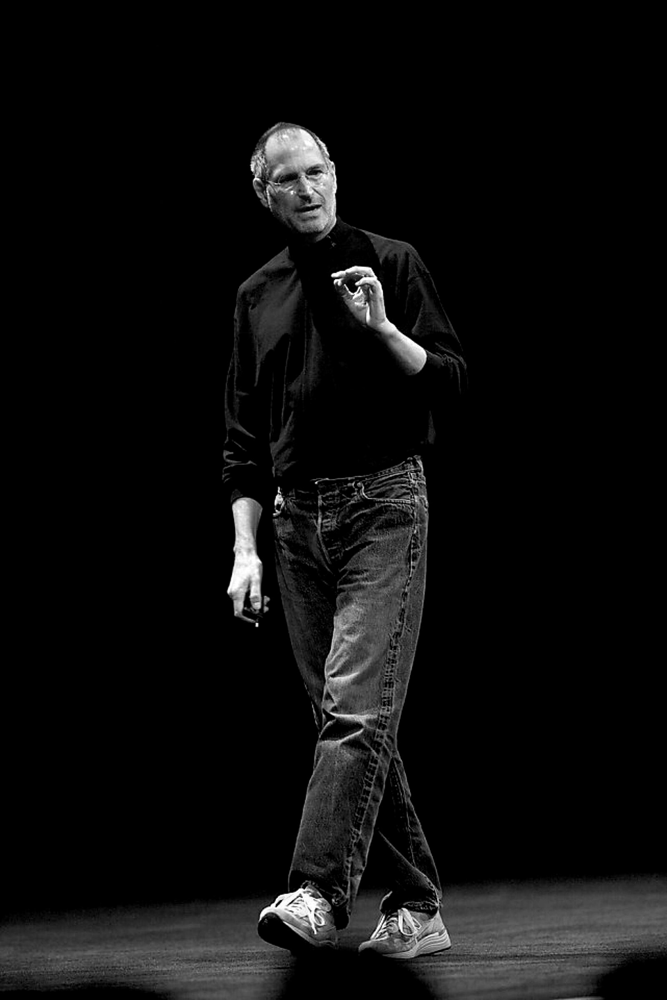
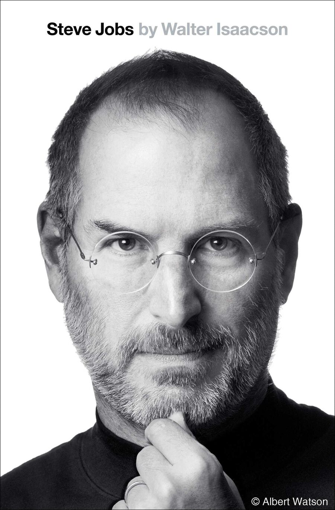

Steve Jobs.
Five lessons from his life and work.
01
Focus.
When he returned to Apple, he cut a sprawling product line to four. Each year he had his team list ten priorities, then kept only three.
“Deciding what not to do is as important as deciding what to do.”
Simplify.
03
Push for perfection.
He would stop a project near the finish if it felt wrong, and start again. Even the parts no one would see had to be beautiful.
“Real artists sign their work.”
04
Combine the humanities with the sciences.
Inspired by Edwin Land, he chose to stand where the humanities meet the sciences, connecting creativity to technology, arts to engineering, poetry to processors.
“I always thought of myself as a humanities person as a kid, but I liked electronics.”
05
Stay hungry, stay foolish.
Success never settled him. The engineer and the businessman stayed paired with the seeker and the rebel: restless, curious, unafraid to look foolish.
Lessons are the summary. The life is in the book.

The biography
Steve Jobs
Walter Isaacson
Based on more than forty interviews with Jobs and more than a hundred with family, friends, adversaries, competitors, and colleagues.